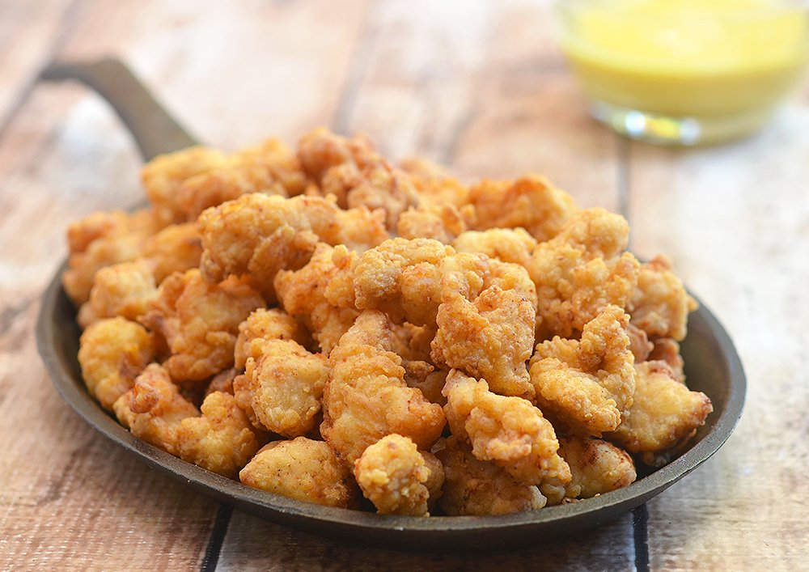

Popcorn Chicken Recipe

Description
Best snack for a movie night!
Ingredients
- 3 cups of flour
- 2 teaspoons garlic powder
- 1/2 teaspoon salt
- 1/4 teaspoon balck pepper
- 2 eggs
- 2 tablespoons lemon juice
- oil for frying
- 3 skinless, boneless chicken breasts, cube
Steps
- Mix flour, garlic powder, salt, and black pepper together in a bowl.
Beat eggs and lemon juice together in a separate bowl.
- Heat 1 1/2 to 2 inches of oil in a large pot over medium heat.
- Dip the chicken pieces into the flour mixture, then the egg mixture,
and again into the flour mixture.
- Test the oil to make sure it is hot enough: a small amount of flour dropped in should sizzle.
Place 10 pieces of chicken into the hot oil; cook until golden brown, about 8 minutes.
Remove from the oil and drain on a paper towel lined plate and season with salt. Repeat with remaining chicken.
Return to Main Page